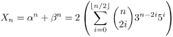
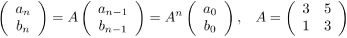
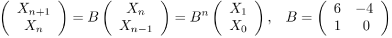
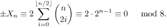

Code Jam 2008 - Round 1A
Analysis: Numbers
This problem with a simple statement was in fact one of the hardest in Round
1. The input restrictions for the small input were chosen so that
straightforward solutions in Java or Python, which have arbitrary-precision
numbers, would fail.
The trick was calculating √5 to a large enough precision and not using
the default double value. It turned out that using the Windows calculator or
the UNIX bc tool was enough to solve the small tests as well.
Solving the large tests was a very different problem. The difficulty comes from the fact that √5 is irrational and for n close to 2000000000 you would need a lot of precision and a lot of time if you wanted to use the naive solution.
The key in solving the problem is a mathematical concept called
conjugation.
In our problem, we simply note that
(1) α := 3 + √5, β := 3 - √5, and Xn := αn + βn.
We first note that Xn is an integer. This can be proved by using the binomial expansion. If you write everything down you'll notice that the irrational terms of the sums cancel each other out.
(2) 
Another observation is that βn < 1, so Xn is actually the first integer greater than αn. Thus we may just focus on computing the last three digits of X.
A side note. In fact, βn tends to 0 so quickly that that our problem would be trivial if we asked for the three digits after the decimal point. For all large values of n they are always 999.
Based on (1) and (2), there are many different solutions for finding the last three digits of Xn.
Solution A. [the interleave of rational and irrational]
One solution goes like this: αn can be written as
(3) α(n + 1) = (3 + √5)(an + bn√5) = (3an + 5bn) + (3bn + an)√5.
So an + 1 = 3an + 5bn and bn + 1 = 3bn + an. This can be written in matrix form as
(4) 
Since α0 = 1, we have (a0, b0) = (1, 0).
Now we use the standard fast exponentiation to get An in O(log n) time. Note that we do all operations modulo 1000 because we just need to return the last three digits of an.
Here's some Python code that implements this solution:
def matrix_mult(A, B):
C = [[0, 0], [0, 0]]
for i in range(2):
for j in range(2):
for k in range(2):
C[i][k] = (C[i][k] + A[i][j] * B[j][k]) % 1000
return C
def fast_exponentiation(A, n):
if n == 1:
return A
else:
if n % 2 == 0:
A1 = fast_exponentiation(A, n/2)
return matrix_mult(A1, A1)
else:
return matrix_mult(A, fast_exponentiation(A, n - 1))
def solve(n):
A = [[3, 5], [1, 3]]
A_n = fast_exponentiation(A, n)
return (2 * M_n[0][0] + 999) % 1000
Solution B. [the quadratic equation and linear recurrence]
Experienced contestants may notice there is a linear recurrence on the Xi's. Indeed, this is not hard to find -- the conjugation enters the picture again.
Notice that
(5) α + β = 6, and α β = 4.
So α and β are the two roots of the quadratic equation x2 - 6x + 4 = 0. i.e.,
(6) α2 = 6α - 4, and β2 = 6β - 4.
Looking at (1) and (6) together, we happily get
(7) Xn+2 = 6Xn+1 - 4Xn.
Such recurrence can always be written in matrix form. It is somewhat redundant, but it is useful:

From here it is another fast matrix exponentiation. Let us see radeye's perl code that implements this approach here:
sub mul {
my $a = shift ;
my $b = shift ;
my @a = @{$a} ;
my @b = @{$b} ;
my @c = ($a[0]*$b[0] + $a[1]*$b[2],
$a[0]*$b[1] + $a[1]*$b[3],
$a[2]*$b[0] + $a[3]*$b[2],
$a[2]*$b[1] + $a[3]*$b[3]) ;
@c = map { $_ % 1000 } @c ;
return @c ;
}
sub f {
my $n = shift ;
return 2 if $n == 0 ;
return 6 if $n == 1 ;
return 28 if $n == 2 ;
$n -= 2 ;
my @mat = (0, 1, 996, 6) ;
my @smat = @mat ;
while ($n > 0) {
if ($n & 1) {
@mat = mul([@mat], [@smat]) ;
}
@smat = mul([@smat], [@smat]) ;
$n >>= 1 ;
}
return ($mat[0] * 6 + $mat[1] * 28) % 1000 ;
}
sub ff {
my $r = shift ;
$r = ($r + 999) % 1000 ;
$r = "0" . $r while length($r) < 3 ;
return $r ;
}
for $c (1..<>) {
$n = <> ;
print "Case #$c: ", ff(f($n)), "\n" ;
}
Solution C. [the periodicity of 3 digits]
For this problem, we have another approach based on the recurrence (7). Notice that we only need to focus on the last 3 digits of Xn, which only depends on the last 3 digits of the previous two terms. The numbers eventually become periodic as soon as we have (Xi, Xi+1) and (Xj, Xj+1) with the same last 3 digits, where i < j. It is clear that we will enter a cycle no later than 106 steps. In fact, for this problem, you can write some code and find out that the cycle has the size 100 and starts at the 3rd element in the sequence. So to solve the problem we can just brute force the results for the first 103 numbers and if n is bigger than 103 return the result computed for the number (n - 3) % 100 + 3.
Solution D. [the pure quest of numbers and combinatorics]
Let us see one more solution of different flavor. Here is a solution not as general as the others, but tailored to this problem, and makes one feel we are almost solving this problem by hand.
Let us look again at (2). We want to know Xn mod 1000.
We know from the
chinese remander theorem
that if we can find Xn mod 8 and Xn mod 125, then
Xn mod 1000 is uniquely determined.
(a) For n > 2, Xn mod 8 is always 0. Since 5i
≡ 1 (mod 4), 3n-2i ≡ 1 or -1 (mod 4) depending on n,
so, for n > 2,

(b) To compute Xn mod 125, we only need to worry about i=0,1,2. All the rest are 0 mod 125. In other words, all we need to compute is

There are various ways to compute the elements in the above quantity. The exponents can be computed by fast exponentiation, or using the fact that 3n mod 125 is periodic with cycle length at most 124. The binomial numbers can be computed using arbitrary precision integers in languages like Java and Python, or with a bit careful programming in languages like C++.
More information:
Binomial numbers - Linear recurrence - Exponentiation - Chinese remainder theorem